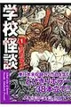
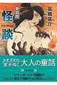
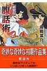

高橋葉介（たかはし ようすけ）
学校怪談（文庫）

01TBD
学校怪談
TBD
怪談新装版

01TBD
腹話術新装版

01TBD
データベース
| タイトル | ISBN | 絵 | 作 | 発行 | URL | 紙 | 電子 | その他1 | その他2 |
|---|---|---|---|---|---|---|---|---|---|
| 学校怪談（01） | 9784253177825 | 高橋葉介 | 秋田書店 | url | Y | 386 | |||
| 学校怪談（01） | 9784253053747 | 高橋葉介 | 秋田書店 | url | Y | 386 | |||
| 学校怪談（02） | 9784253053754 | 高橋葉介 | 秋田書店 | url | Y | 384 | |||
| 学校怪談（03） | 9784253053761 | 高橋葉介 | 秋田書店 | url | Y | 383 | |||
| 学校怪談（04） | 9784253053778 | 高橋葉介 | 秋田書店 | url | Y | 382 | |||
| 学校怪談（05） | 9784253053785 | 高橋葉介 | 秋田書店 | url | Y | 2028 | |||
| 学校怪談（06） | 9784253053792 | 高橋葉介 | 秋田書店 | url | Y | 381 | |||
| 学校怪談（07） | 9784253053808 | 高橋葉介 | 秋田書店 | url | Y | 380 | |||
| 学校怪談（08） | 9784253053815 | 高橋葉介 | 秋田書店 | url | Y | 379 | |||
| 学校怪談（09） | 9784253053822 | 高橋葉介 | 秋田書店 | url | Y | 378 | |||
| 学校怪談（10） | 9784253053839 | 高橋葉介 | 秋田書店 | url | Y | 2029 | |||
| 学校怪談（11） | 9784253053884 | 高橋葉介 | 秋田書店 | url | Y | 2034 | |||
| 学校怪談（12） | 9784253053952 | 高橋葉介 | 秋田書店 | url | Y | 2033 | |||
| 学校怪談（13） | 9784253053969 | 高橋葉介 | 秋田書店 | url | Y | 2032 | |||
| 学校怪談（14） | 9784253054317 | 高橋葉介 | 秋田書店 | url | Y | 3563 | |||
| 学校怪談（15） | 9784253054324 | 高橋葉介 | 秋田書店 | url | Y | 2035 | |||
| 怪談新装版 | 9784257724193 | 高橋葉介 | 朝日ソノラマ | url | Y | 376 | |||
| 腹話術新装版 | 9784257724254 | 高橋葉介 | 朝日ソノラマ | url | Y | 377 |